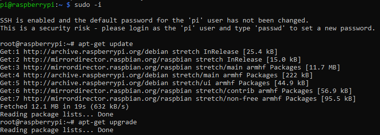

Instalacion del servidor apache y mysql
Para la instalacion del servidor apache en la raspberry tenemos que abrir un terminal y establecer una conexion ssh, elevar los permisos y realizar los siguientes pasos:
- Hacemos un apt-get update para buscar actualizaciones de los paquetes disponibles

- Despues con el comando apt-get upgrade procedemos instalar todas las actualizaciones.
- Cuando termine de actualizar (tarda un rato) instalaremos el servidor apache con el comando apt-get install apache2
- Ahora precisamos instalar un servidor de mysql con apt-get install mysql-server
y el cliente apt-get install mysql-client
- Comprobamos la ultima version de php con el comando apt-cache search php7-*

- Necesitamos instalar php, para ello lanzamos el comando apt-get install php7.0
- En este paso instalaremos php con mysql mediante apt-get install php7.0-mysql

- Ahora que tenemos todo instalado tenemos que reiniciar el servicio de apache con el comando service apache2 restart

- Nos situamos en el directorio cd /var/www/html/ ls y hacemos un listado de los archivos
- Por defecto contiene un archivo html el cual hay que eliminar rm index.html

- Necesitamos crear un fichero php para ello utilizamos nano nano index.php con el contenido <?php phpinfo(); ?>